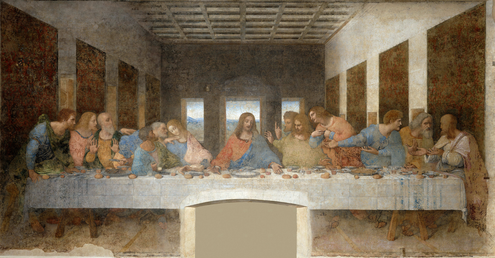

중세 후기 · 이탈리아
르네상스는 하나의 화가가 갑자기 시작한 단일 양식이 아니다. 중세 후기의 종교적·상징적 회화에서 출발하여, 인간의 몸, 감정, 자연, 공간을 관찰하고 고대 그리스·로마의 지적·미적 전통을 새롭게 해석하려 한 장기적 변화였다. 이후 이탈리아에서는 피렌체·로마 계열과 베네치아 계열이 뚜렷한 차이를 보였고, 북유럽에서는 유화와 세밀한 관찰을 중심으로 한 북유럽 르네상스가 독자적으로 발전했다.
상세 학습
르네상스는 고대의 형식과 지식을 다시 연구하면서 인간의 몸과 현실 공간을 설득력 있게 구성하려 한 긴 변화다. 중세와 단절된 한순간의 탄생이 아니라 도시, 공방, 후원, 과학적 관찰이 여러 세대에 걸쳐 결합한 과정으로 이해해야 한다.
고딕의 상징적 위계와 장식적 선에서 관찰 가능한 공간과 신체로 이동하고, 뒤의 매너리즘은 르네상스가 완성한 균형을 일부러 늘이고 비틀어 긴장을 만든다.
흔한 오해: 르네상스를 고대의 단순한 복제나 천재 몇 명의 발명으로 보면 안 된다. 지역별 공방 전통과 종교적 기능은 계속 남아 있었고, 이탈리아 안에서도 피렌체와 베네치아의 해법이 달랐다.
가장 단순화하면, 르네상스 회화의 변화는 “성스러운 의미를 상징적으로 보여주는 것”에서 “성스러운 사건도 인간이 살아가는 실제 세계 안에서 설득력 있게 보여주는 것”으로의 이동이다.
성인도 무게를 가진 신체와 구체적 표정을 지닌 인간으로 나타난다.
원근법과 건축 구조를 통해 그림 속 공간을 논리적으로 조직한다.
인체·풍경·빛·사물의 실제 모습을 적극적으로 연구한다.
그리스·로마의 조각, 건축, 철학과 인간관을 새로운 시대에 맞게 재구성한다.
관람자의 눈높이와 위치가 그림의 공간 구성에 실제로 관여한다.


| 관찰 항목 | 중세 후기 회화 | 초기 르네상스 |
|---|---|---|
| 공간 | 상징적·초월적 공간 | 선원근법으로 조직된 논리적 공간 |
| 인물 | 종교적 역할과 위계가 우선 | 무게·부피·감정을 가진 인간 |
| 배경 | 금빛·비현실적 | 건축·풍경·실내 등 현실적 환경 |
| 빛 | 성스러움과 장식성을 강조 | 입체와 공간을 만드는 자연스러운 빛 |
| 고대문화 | 제한적 | 고대 그리스·로마의 인체와 건축을 적극 재해석 |
| 관람자 | 성상을 경배하는 위치 | 그림 속 공간과 시각적으로 연결된 위치 |
모든 르네상스 회화를 하나의 양식으로 묶으면 차이가 보이지 않는다. 작품을 보는 데 가장 유용한 구분은 다음 세 방향이다.


| 비교 항목 | 피렌체·로마 | 베네치아 | 북유럽 |
|---|---|---|---|
| 대표작 | 라파엘로 《아테네 학당》 | 티치아노 《성모 승천》 | 반 에이크 《아르놀피니 부부의 초상》 |
| 핵심 질문 | 세계를 어떻게 논리적이고 이상적으로 조직할까? | 색과 빛으로 어떻게 살아 있는 감각을 만들까? | 눈앞의 사물을 얼마나 정확하게 관찰할 수 있을까? |
| 형태 | 윤곽·드로잉·해부학 | 색면·붓질·빛 | 미세한 표면 묘사 |
| 공간 | 선원근법과 기하학적 질서 | 빛·대기·색의 깊이 | 경험적 공간과 세밀한 실내 관찰 |
| 인체 | 이상적이고 구조적으로 명확함 | 빛과 색 속에서 감각적으로 나타남 | 개별 인물의 얼굴·복식·표면을 세밀히 묘사 |
| 고전 고대 | 매우 적극적 | 적극적이지만 색채적 전통과 결합 | 초기에는 상대적으로 약하며 이후 이탈리아 영향과 결합 |
| 기억법 | 구조 | 색과 빛 | 표면과 관찰 |
화면의 작품 이미지는 원작이 공공영역에 속하는 회화의 Wikimedia Commons 공개 이미지를 불러오도록 구성했다.
※ 작품 이미지는 자료 폴더의 로컬 이미지 파일을 사용한다. 본문의 설명도 파일 자체에 모두 포함되어 있다.
이 표는 다른 탭이 참조하는 정본 표이므로 르네상스의 모든 지역 수용을 나열하지 않는다. 초심자가 이탈리아 르네상스를 이해하는 데 필요한 초기 르네상스, 전성기 르네상스, 베네치아 르네상스만 세부 사조로 둔다. 알프스 이북의 전개는 북방 르네상스 문서에서 별도 정본 표로 다룬다.
| 국가·지역·세부 사조 | 지역적 특징 | 대표 화가·제작자 | 더 볼 화가 |
|---|---|---|---|
| 이탈리아 — 초기 르네상스 |
| 마사초 | 산드로 보티첼리, 프라 안젤리코, 피에로 델라 프란체스카 |
| 이탈리아 — 전성기 르네상스 |
| 레오나르도 다 빈치 | 미켈란젤로 부오나로티, 라파엘로 산치오 |
| 이탈리아 — 베네치아 르네상스 |
| 티치아노 | 조반니 벨리니, 조르조네, 틴토레토, 파올로 베로네세 |
이 문서의 정본 표는 이탈리아 르네상스를 이해하는 데 필요한 세 흐름으로 좁힌다. 피렌체와 로마의 화가들이 선원근법·해부학·고전 비례를 통해 세계를 구조화했다면, 베네치아 화파는 색채와 빛의 층으로 형태를 만들었다. 알프스 이북의 유화, 판화, 종교개혁 환경은 별도 북방 르네상스 문서에서 다룬다.
피렌체 르네상스의 핵심은 디세뇨(disegno), 곧 그리기·설계·구상 능력이다. 브루넬레스키의 원근법, 도나텔로의 조각적 인체, 마사초의 공간 실험은 회화를 수학적으로 측정 가능한 세계로 바꾸었다. 여기서 중요한 것은 단순한 사실성이 아니라, 관람자가 서 있는 현실 공간과 그림 속 공간을 하나의 질서로 연결하려는 시도였다.
로마에서는 이 발견이 더 장대한 고전주의로 확대된다. 다 빈치는 인물의 심리와 빛의 부드러운 전환을, 미켈란젤로는 조각처럼 강한 인체와 영웅적 긴장을, 라파엘로는 조화로운 구성과 인문주의적 질서를 대표한다. 따라서 피렌체·로마 계열은 “정확하게 보이는 것”보다 인간과 세계가 합리적으로 조직될 수 있다는 믿음을 시각화한 흐름이다.
베네치아 화파는 피렌체처럼 윤곽선과 해부학으로 형태를 확정하기보다, 색채의 층과 빛의 번짐으로 형태가 나타나게 했다. 습기 많은 석호 도시의 대기, 동방 무역을 통한 안료와 직물 문화, 목판보다 캔버스가 유리한 환경, 그리고 벨리니 이후 축적된 유화 기술이 이 흐름을 뒷받침했다.
조르조네는 풍경과 인물이 하나의 시적 분위기 안에 잠기는 방식을 만들었고, 티치아노는 붉은색·금빛·살색의 큰 색채 덩어리로 종교화와 초상화를 모두 극적으로 바꾸었다. 베로네세는 이 색채 전통을 대형 연회화와 궁전 천장화의 무대적 공간으로 확장했다. 베네치아 화파는 르네상스 안의 하위 화파로 보아도 충분하지만, 후대 바로크의 색채 회화를 여는 중요한 다리이기도 하다.
아래 카드는 위 정본 표의 대표 화가를 다시 모아 비교하는 자리입니다. 문서 위에서 이미 소개한 작품도 함께 제시합니다.

선정 이유 마사초는 원근법과 빛을 한 화면에서 결합해 초기 르네상스의 출발점을 가장 명료하게 보여 준다.
소실점이 관람자의 눈높이에 놓이며 예배당 같은 깊이가 실제 벽 안으로 열린다. 단단한 인체와 일관된 빛은 중세의 위계적 공간에서 관찰 가능한 인간 세계로 옮겨 가는 변화를 설명한다.

더 볼 이유 보티첼리는 초기 르네상스의 인문주의가 고대 신화와 새로운 미의식으로 확장되는 과정을 보여 준다.
고전 신화의 비너스를 맑은 윤곽과 균형 잡힌 화면에 배치한 점에서 르네상스의 고대 부흥이 드러난다. 해부학적 자연스러움보다 유려한 선과 시적인 리듬을 앞세운 것이 보티첼리만의 특징이다.

더 볼 이유 프라 안젤리코는 중세의 금빛 신앙성과 르네상스의 새로운 공간 표현이 공존하는 초기 단계를 보여 준다.
단순한 회랑의 원근과 부드러운 자연광은 성스러운 사건을 인간의 실제 공간에 놓는다. 절제된 색과 고요한 명상성을 끝까지 유지한 점은 프라 안젤리코만의 특성이다.

더 볼 이유 피에로는 초기 르네상스의 수학적 원근과 빛의 질서를 가장 엄밀하게 발전시킨 화가다.
건축 공간과 인물의 크기가 정교한 비례로 연결되어 르네상스의 합리적 공간관을 보여 준다. 감정을 절제한 인물을 맑고 균일한 빛 속에 배치한 점은 피에로만의 특성이다.

선정 이유 레오나르도는 과학적 관찰과 심리적 서사를 균형 잡힌 구도에 통합한 전성기 르네상스의 기준점이다.
그리스도를 중심으로 원근선이 모이고 열두 제자의 반응은 파도처럼 좌우로 퍼진다. 수학적 질서와 순간의 감정이 충돌하지 않고 결합된다는 점이 전성기 르네상스의 종합성을 보여 준다.

더 볼 이유 미켈란젤로는 전성기 르네상스가 추구한 이상적 인체와 장대한 종합을 벽화 규모로 확인하게 한다.
정확한 해부학과 안정된 인물 배치는 전성기 르네상스의 인간 중심 질서를 드러낸다. 조각가다운 육중한 신체와 손끝 사이의 긴장으로 정신적 에너지를 만든 점은 미켈란젤로만의 특성이다.

더 볼 이유 라파엘로는 레오나르도와 미켈란젤로 사이에서 전성기 르네상스의 균형과 명료한 공간 질서를 완성한 핵심 화가다.
건축 원근과 인물 무리가 안정된 반원 구조를 이루어 고전적 조화라는 사조의 특징을 보여 준다. 서로 다른 철학자의 몸짓과 표정을 분명히 구별하면서도 하나의 질서로 묶은 점은 라파엘로만의 특성이다.

선정 이유 티치아노의 색채와 붓질은 피렌체·로마의 선 중심 르네상스와 베네치아 전개의 차이를 즉시 보이게 한다.
붉은 옷의 성모와 황금빛 하늘이 화면을 위로 끌어올리고 아래 사도들의 몸짓이 그 운동을 받친다. 색채가 형태와 감정을 동시에 조직하는 방식에서 베네치아 회화의 독자성이 드러난다.

더 볼 이유 벨리니는 베네치아 르네상스의 빛과 색채 전통을 티치아노 이전 단계에서 이해하게 한다.
부드러운 빛과 대기 속에 인물과 풍경을 연결한 점에서 베네치아 회화의 색채적 통일이 드러난다. 종교 장면을 조용하고 명상적인 분위기로 바꾼 것이 벨리니만의 특징이다.

더 볼 이유 조르조네는 베네치아 르네상스가 서사보다 색채와 대기, 시적인 분위기를 앞세우게 한 전환점이다.
인물보다 폭풍 전의 빛과 젖은 풍경이 화면의 의미를 이끄는 점에서 베네치아의 색채적 자연관이 드러난다. 명확한 이야기 대신 음악처럼 암시적인 정서를 만든 것이 조르조네만의 특성이다.

더 볼 이유 틴토레토는 베네치아의 색채에 과감한 단축과 대각선 운동을 결합해 후기 르네상스의 극적 전개를 보여 준다.
급강하하는 성인과 소용돌이치는 군중은 안정된 르네상스 구도를 깨고 강한 운동감을 만든다. 빠른 붓질과 무대 조명 같은 명암으로 사건을 눈앞의 충격으로 바꾼 점은 틴토레토만의 특성이다.

더 볼 이유 베로네세는 베네치아 르네상스의 화려한 색채와 건축적 장관을 대규모 연회 장면으로 확장했다.
밝은 색의 의상과 고전 건축, 수많은 인물이 거대한 화면에서 질서 있게 어우러져 베네치아 회화의 장식성과 개방감을 보여 준다. 종교 장면을 동시대 귀족 축제처럼 연출한 점은 베로네세만의 특성이다.